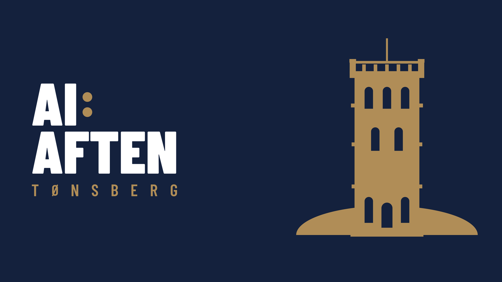

Profesjonell kveld for næringslivet
AI:Aften Tønsberg
En profesjonell kveld om kunstig intelligens for næringslivet i Tønsberg, ledet av Andreas Berthelsen.
- Dørene 18.30, pizza og mingling
- Start 19.00
- Sted Friends (Loungen), Storgaten 30-32, 3126 Tønsberg
Pizzaen er spandert av Aider, og Two Hundred spanderer forfriskninger.
Gratis for medlemmer av næringsforeningen. Påmeldingen tas imot av Tønsberg og Færder Næringsforening.

Program
Torsdag 3. desember 2026. Dørene åpner 18.30 med pizza og mingling.
-
Velkommen
-
Månedens AI-nyheter
-
Pause med mingling
-
2026 – året som var, ved Stian Mundal (Two Hundred)
-
Pause med mingling
-
Panel: Hva kommer i 2027? Ledet av Andreas Berthelsen, med Stian Mundal (Two Hundred), Hanne Kristin Kvendbø (Aider) og Simon Killie (Laup).
-
Spørsmål fra salen
-
Mingling og slutt
Gratis for medlemmer av næringsforeningen.
Praktisk
- Når
- Torsdag 3. desember 2026
- Dørene åpner
- 18.30, med pizza og mingling
- Programmet starter
- 19.00
- Slutt
- 21.00
- Sted
- Friends (Loungen), Storgaten 30-32, 3126 Tønsberg
- Påmelding
- Tønsberg og Færder Næringsforening (TFNF). Gratis for medlemmer av næringsforeningen.
Pizzaen er spandert av Aider, og Two Hundred spanderer forfriskninger.
Meld deg påOm kvelden
AI:Aften Tønsberg er en profesjonell kveld om kunstig intelligens for næringslivet i Tønsberg. Vert er Andreas Berthelsen.
Første kveld er torsdag 3. desember 2026. AI:Aften er planlagt som et månedlig arrangement.
Kvelden arrangeres i samarbeid med Tønsberg og Færder Næringsforening (TFNF). Påmeldingen tas imot av TFNF.